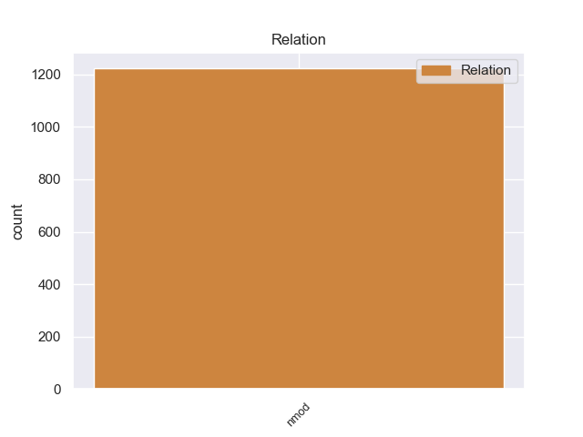
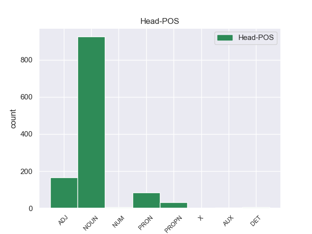
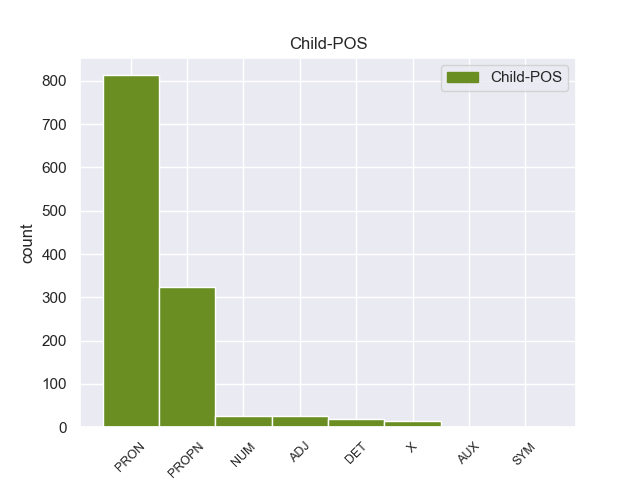

Distribution of features within this leaf



Agreement Rules sorted by frequency.
- When the dependent token is the nominal modifier(nmod) of the head token, and the head token is NOUN and the dependent token is PRON.
1 Aunque _ _ _ _ 0 _ _ _
2 su _ _ _ _ 0 _ _ _
3 masa _ _ _ _ 0 _ _ _
4 es _ _ _ _ 0 _ _ _
5 aproximadamente _ _ _ _ 0 _ _ _
6 un _ _ _ _ 0 _ _ _
7 tercio tercio NOUN _ Gender=Masc|Number=Sing 0 _ _ _
8 de _ _ _ _ 0 _ _ _
9 la él PRON _ Case=Acc|Gender=Fem|Number=Sing|Person=3|PrepCase=Npr|PronType=Prs 7 nmod _ _
10 de _ _ _ _ 0 _ _ _
11 el _ _ _ _ 0 _ _ _
12 Sol _ _ _ _ 0 _ _ _
13 , _ _ _ _ 0 _ _ _
14 su _ _ _ _ 0 _ _ _
15 radio _ _ _ _ 0 _ _ _
16 equivale _ _ _ _ 0 _ _ _
17 a _ _ _ _ 0 _ _ _
18 2,32 _ _ _ _ 0 _ _ _
19 veces _ _ _ _ 0 _ _ _
20 el _ _ _ _ 0 _ _ _
21 radio _ _ _ _ 0 _ _ _
22 solar _ _ _ _ 0 _ _ _
23 , _ _ _ _ 0 _ _ _
24 estando _ _ _ _ 0 _ _ _
25 situada _ _ _ _ 0 _ _ _
26 en _ _ _ _ 0 _ _ _
27 el _ _ _ _ 0 _ _ _
28 diagrama _ _ _ _ 0 _ _ _
29 de _ _ _ _ 0 _ _ _
30 Hertzsprung _ _ _ _ 0 _ _ _
31 - _ _ _ _ 0 _ _ _
32 Russell _ _ _ _ 0 _ _ _
33 por _ _ _ _ 0 _ _ _
34 encima _ _ _ _ 0 _ _ _
35 de _ _ _ _ 0 _ _ _
36 la _ _ _ _ 0 _ _ _
37 secuencia _ _ _ _ 0 _ _ _
38 principal _ _ _ _ 0 _ _ _
39 . _ _ _ _ 0 _ _ _
1 Los _ _ _ _ 0 _ _ _
2 usuarios _ _ _ _ 0 _ _ _
3 también _ _ _ _ 0 _ _ _
4 pueden _ _ _ _ 0 _ _ _
5 iniciar _ _ _ _ 0 _ _ _
6 una _ _ _ _ 0 _ _ _
7 conversación _ _ _ _ 0 _ _ _
8 telepática _ _ _ _ 0 _ _ _
9 con _ _ _ _ 0 _ _ _
10 los _ _ _ _ 0 _ _ _
11 usuarios _ _ _ _ 0 _ _ _
12 de _ _ _ _ 0 _ _ _
13 otros _ _ _ _ 0 _ _ _
14 cibercerebros _ _ _ _ 0 _ _ _
15 , _ _ _ _ 0 _ _ _
16 y _ _ _ _ 0 _ _ _
17 las _ _ _ _ 0 _ _ _
18 desventajas _ _ _ _ 0 _ _ _
19 son _ _ _ _ 0 _ _ _
20 la _ _ _ _ 0 _ _ _
21 piratería _ _ _ _ 0 _ _ _
22 de _ _ _ _ 0 _ _ _
23 alteración _ _ _ _ 0 _ _ _
24 maliciosa _ _ _ _ 0 _ _ _
25 de _ _ _ _ 0 _ _ _
26 la _ _ _ _ 0 _ _ _
27 memoria memoria NOUN _ Gender=Fem|Number=Sing 0 _ _ _
28 de _ _ _ _ 0 _ _ _
29 el _ _ _ _ 0 _ _ _
30 cibercerebro cibercerebro PROPN _ Gender=Masc|Number=Sing 27 nmod _ SpaceAfter=No
31 , _ _ _ _ 0 _ _ _
32 y _ _ _ _ 0 _ _ _
33 la _ _ _ _ 0 _ _ _
34 distorsión _ _ _ _ 0 _ _ _
35 deliberada _ _ _ _ 0 _ _ _
36 de _ _ _ _ 0 _ _ _
37 la _ _ _ _ 0 _ _ _
38 realidad _ _ _ _ 0 _ _ _
39 subjetiva _ _ _ _ 0 _ _ _
40 y _ _ _ _ 0 _ _ _
41 de _ _ _ _ 0 _ _ _
42 la _ _ _ _ 0 _ _ _
43 experiencia _ _ _ _ 0 _ _ _
44 . _ _ _ _ 0 _ _ _
1 En _ _ _ _ 0 _ _ _
2 lo él PRON _ Case=Acc|Gender=Masc|Number=Sing|Person=3|PrepCase=Npr|PronType=Prs 16 nmod _ _
3 que _ _ _ _ 0 _ _ _
4 a _ _ _ _ 0 _ _ _
5 la _ _ _ _ 0 _ _ _
6 propiedad _ _ _ _ 0 _ _ _
7 se _ _ _ _ 0 _ _ _
8 refiere _ _ _ _ 0 _ _ _
9 , _ _ _ _ 0 _ _ _
10 una _ _ _ _ 0 _ _ _
11 extensión _ _ _ _ 0 _ _ _
12 de _ _ _ _ 0 _ _ _
13 1,373 _ _ _ _ 0 _ _ _
14 hectáreas _ _ _ _ 0 _ _ _
15 es _ _ _ _ 0 _ _ _
16 privada privado ADJ _ Gender=Fem|Number=Sing|VerbForm=Part 0 _ _ _
17 y _ _ _ _ 0 _ _ _
18 otra _ _ _ _ 0 _ _ _
19 de _ _ _ _ 0 _ _ _
20 9,121 _ _ _ _ 0 _ _ _
21 es _ _ _ _ 0 _ _ _
22 ejidal _ _ _ _ 0 _ _ _
23 ; _ _ _ _ 0 _ _ _
1 Para _ _ _ _ 0 _ _ _
2 que _ _ _ _ 0 _ _ _
3 las _ _ _ _ 0 _ _ _
4 escenas _ _ _ _ 0 _ _ _
5 pudiesen _ _ _ _ 0 _ _ _
6 fluir _ _ _ _ 0 _ _ _
7 mejor _ _ _ _ 0 _ _ _
8 de _ _ _ _ 0 _ _ _
9 una uno PRON _ Gender=Fem|Number=Sing|PronType=Ind 0 _ _ _
10 a _ _ _ _ 0 _ _ _
11 la _ _ _ _ 0 _ _ _
12 otra otro PRON _ Gender=Fem|Number=Sing|PronType=Ind 9 nmod _ SpaceAfter=No
13 , _ _ _ _ 0 _ _ _
14 tuvieron _ _ _ _ 0 _ _ _
15 que _ _ _ _ 0 _ _ _
16 alterar _ _ _ _ 0 _ _ _
17 ligeramente _ _ _ _ 0 _ _ _
18 la _ _ _ _ 0 _ _ _
19 historia _ _ _ _ 0 _ _ _
20 de _ _ _ _ 0 _ _ _
21 el _ _ _ _ 0 _ _ _
22 juego _ _ _ _ 0 _ _ _
23 . _ _ _ _ 0 _ _ _
1 El _ _ _ _ 0 _ _ _
2 casting casting PROPN _ Gender=Masc|Number=Sing 0 _ _ _
3 de _ _ _ _ 0 _ _ _
4 la _ _ _ _ 0 _ _ _
5 tele tele PROPN _ Gender=Fem|Number=Sing 2 nmod _ _
6 ( _ _ _ _ 0 _ _ _
7 Uruguay _ _ _ _ 0 _ _ _
8 ) _ _ _ _ 0 _ _ _
9 Se _ _ _ _ 0 _ _ _
10 emite _ _ _ _ 0 _ _ _
11 por _ _ _ _ 0 _ _ _
12 Teledoce _ _ _ _ 0 _ _ _
13 de _ _ _ _ 0 _ _ _
14 Uruguay _ _ _ _ 0 _ _ _
15 todos _ _ _ _ 0 _ _ _
16 los _ _ _ _ 0 _ _ _
17 domingos _ _ _ _ 0 _ _ _
18 luego _ _ _ _ 0 _ _ _
19 de _ _ _ _ 0 _ _ _
20 Telemundo _ _ _ _ 0 _ _ _
21 . _ _ _ _ 0 _ _ _
1 En _ _ _ _ 0 _ _ _
2 efecto _ _ _ _ 0 _ _ _
3 , _ _ _ _ 0 _ _ _
4 no _ _ _ _ 0 _ _ _
5 sólo _ _ _ _ 0 _ _ _
6 es _ _ _ _ 0 _ _ _
7 preciso _ _ _ _ 0 _ _ _
8 evitar _ _ _ _ 0 _ _ _
9 que _ _ _ _ 0 _ _ _
10 puedan _ _ _ _ 0 _ _ _
11 repetir _ _ _ _ 0 _ _ _
12 se _ _ _ _ 0 _ _ _
13 los _ _ _ _ 0 _ _ _
14 casos _ _ _ _ 0 _ _ _
15 de _ _ _ _ 0 _ _ _
16 fraude fraude NOUN _ Gender=Fem|Number=Sing 0 _ _ _
17 de _ _ _ _ 0 _ _ _
18 el _ _ _ _ 0 _ _ _
19 pasado pasado ADJ _ Gender=Masc|Number=Sing|VerbForm=Part 16 nmod _ SpaceAfter=No
20 , _ _ _ _ 0 _ _ _
21 sino _ _ _ _ 0 _ _ _
22 sobre _ _ _ _ 0 _ _ _
23 todo _ _ _ _ 0 _ _ _
24 conseguir _ _ _ _ 0 _ _ _
25 que _ _ _ _ 0 _ _ _
26 se _ _ _ _ 0 _ _ _
27 reduzca _ _ _ _ 0 _ _ _
28 sensiblemente _ _ _ _ 0 _ _ _
29 el _ _ _ _ 0 _ _ _
30 número _ _ _ _ 0 _ _ _
31 de _ _ _ _ 0 _ _ _
32 errores _ _ _ _ 0 _ _ _
33 de _ _ _ _ 0 _ _ _
34 gestión _ _ _ _ 0 _ _ _
35 que _ _ _ _ 0 _ _ _
36 el _ _ _ _ 0 _ _ _
37 Tribunal _ _ _ _ 0 _ _ _
38 de _ _ _ _ 0 _ _ _
39 cuentas _ _ _ _ 0 _ _ _
40 ha _ _ _ _ 0 _ _ _
41 reflejado _ _ _ _ 0 _ _ _
42 en _ _ _ _ 0 _ _ _
43 su _ _ _ _ 0 _ _ _
44 informe _ _ _ _ 0 _ _ _
45 anual _ _ _ _ 0 _ _ _
46 . _ _ _ _ 0 _ _ _
1 Los _ _ _ _ 0 _ _ _
2 ministros _ _ _ _ 0 _ _ _
3 miembros miembro ADJ _ Gender=Masc|Number=Plur 0 _ _ _
4 de _ _ _ _ 0 _ _ _
5 las _ _ _ _ 0 _ _ _
6 Fuerzas fuerza PROPN _ Gender=Fem|Number=Plur 3 nmod _ _
7 Nuevas _ _ _ _ 0 _ _ _
8 iniciarion _ _ _ _ 0 _ _ _
9 un _ _ _ _ 0 _ _ _
10 boicot _ _ _ _ 0 _ _ _
11 a _ _ _ _ 0 _ _ _
12 el _ _ _ _ 0 _ _ _
13 Gobierno _ _ _ _ 0 _ _ _
14 en _ _ _ _ 0 _ _ _
15 septiembre _ _ _ _ 0 _ _ _
16 de _ _ _ _ 0 _ _ _
17 2003 _ _ _ _ 0 _ _ _
18 para _ _ _ _ 0 _ _ _
19 regresar _ _ _ _ 0 _ _ _
20 a _ _ _ _ 0 _ _ _
21 el _ _ _ _ 0 _ _ _
22 mismo _ _ _ _ 0 _ _ _
23 en _ _ _ _ 0 _ _ _
24 enero _ _ _ _ 0 _ _ _
25 de _ _ _ _ 0 _ _ _
26 2004 _ _ _ _ 0 _ _ _
27 . _ _ _ _ 0 _ _ _
1 En _ _ _ _ 0 _ _ _
2 este _ _ _ _ 0 _ _ _
3 sentido _ _ _ _ 0 _ _ _
4 estoy _ _ _ _ 0 _ _ _
5 agradecido _ _ _ _ 0 _ _ _
6 me _ _ _ _ 0 _ _ _
7 permito _ _ _ _ 0 _ _ _
8 mencionar _ _ _ _ 0 _ _ _
9 lo _ _ _ _ 0 _ _ _
10 aquí _ _ _ _ 0 _ _ _
11 , _ _ _ _ 0 _ _ _
12 dado _ _ _ _ 0 _ _ _
13 que _ _ _ _ 0 _ _ _
14 yo _ _ _ _ 0 _ _ _
15 soy _ _ _ _ 0 _ _ _
16 de _ _ _ _ 0 _ _ _
17 un _ _ _ _ 0 _ _ _
18 país _ _ _ _ 0 _ _ _
19 por _ _ _ _ 0 _ _ _
20 el _ _ _ _ 0 _ _ _
21 que _ _ _ _ 0 _ _ _
22 fluye _ _ _ _ 0 _ _ _
23 el _ _ _ _ 0 _ _ _
24 Danubio _ _ _ _ 0 _ _ _
25 por _ _ _ _ 0 _ _ _
26 las _ _ _ _ 0 _ _ _
27 reflexiones _ _ _ _ 0 _ _ _
28 planteadas _ _ _ _ 0 _ _ _
29 por _ _ _ _ 0 _ _ _
30 la _ _ _ _ 0 _ _ _
31 Comisión _ _ _ _ 0 _ _ _
32 , _ _ _ _ 0 _ _ _
33 es _ _ _ _ 0 _ _ _
34 decir _ _ _ _ 0 _ _ _
35 , _ _ _ _ 0 _ _ _
36 por _ _ _ _ 0 _ _ _
37 el _ _ _ _ 0 _ _ _
38 Comisario _ _ _ _ 0 _ _ _
39 Patten _ _ _ _ 0 _ _ _
40 , _ _ _ _ 0 _ _ _
41 pero _ _ _ _ 0 _ _ _
42 también _ _ _ _ 0 _ _ _
43 por _ _ _ _ 0 _ _ _
44 la _ _ _ _ 0 _ _ _
45 Vicepresidenta _ _ _ _ 0 _ _ _
46 Palacio _ _ _ _ 0 _ _ _
47 , _ _ _ _ 0 _ _ _
48 con _ _ _ _ 0 _ _ _
49 quien _ _ _ _ 0 _ _ _
50 estuve _ _ _ _ 0 _ _ _
51 recientemente _ _ _ _ 0 _ _ _
52 en _ _ _ _ 0 _ _ _
53 Budapest _ _ _ _ 0 _ _ _
54 , _ _ _ _ 0 _ _ _
55 sobre _ _ _ _ 0 _ _ _
56 la _ _ _ _ 0 _ _ _
57 posibilidad _ _ _ _ 0 _ _ _
58 de _ _ _ _ 0 _ _ _
59 hacer _ _ _ _ 0 _ _ _
60 navegable navegable ADJ _ Number=Sing 0 _ _ _
61 de _ _ _ _ 0 _ _ _
62 nuevo nuevo ADJ _ Gender=Masc|Number=Sing 60 nmod _ _
63 a _ _ _ _ 0 _ _ _
64 el _ _ _ _ 0 _ _ _
65 Danubio _ _ _ _ 0 _ _ _
66 , _ _ _ _ 0 _ _ _
67 para _ _ _ _ 0 _ _ _
68 así _ _ _ _ 0 _ _ _
69 promover _ _ _ _ 0 _ _ _
70 una _ _ _ _ 0 _ _ _
71 mínima _ _ _ _ 0 _ _ _
72 recuperación _ _ _ _ 0 _ _ _
73 económica _ _ _ _ 0 _ _ _
74 en _ _ _ _ 0 _ _ _
75 esta _ _ _ _ 0 _ _ _
76 región _ _ _ _ 0 _ _ _
77 , _ _ _ _ 0 _ _ _
78 lo _ _ _ _ 0 _ _ _
79 cual _ _ _ _ 0 _ _ _
80 también _ _ _ _ 0 _ _ _
81 sería _ _ _ _ 0 _ _ _
82 sin _ _ _ _ 0 _ _ _
83 duda _ _ _ _ 0 _ _ _
84 alguna _ _ _ _ 0 _ _ _
85 importante _ _ _ _ 0 _ _ _
86 para _ _ _ _ 0 _ _ _
87 Rumanía _ _ _ _ 0 _ _ _
88 . _ _ _ _ 0 _ _ _
1 Ha _ _ _ _ 0 _ _ _
2 pasado _ _ _ _ 0 _ _ _
3 por _ _ _ _ 0 _ _ _
4 las _ _ _ _ 0 _ _ _
5 más _ _ _ _ 0 _ _ _
6 importantes _ _ _ _ 0 _ _ _
7 promociones _ _ _ _ 0 _ _ _
8 de _ _ _ _ 0 _ _ _
9 lucha _ _ _ _ 0 _ _ _
10 libre _ _ _ _ 0 _ _ _
11 en _ _ _ _ 0 _ _ _
12 el _ _ _ _ 0 _ _ _
13 mundo _ _ _ _ 0 _ _ _
14 como _ _ _ _ 0 _ _ _
15 son _ _ _ _ 0 _ _ _
16 la _ _ _ _ 0 _ _ _
17 NWA _ _ _ _ 0 _ _ _
18 , _ _ _ _ 0 _ _ _
19 la _ _ _ _ 0 _ _ _
20 WCW _ _ _ _ 0 _ _ _
21 y _ _ _ _ 0 _ _ _
22 la _ _ _ _ 0 _ _ _
23 WWF _ _ _ _ 0 _ _ _
24 / _ _ _ _ 0 _ _ _
25 E _ _ _ _ 0 _ _ _
26 la _ _ _ _ 0 _ _ _
27 cual _ _ _ _ 0 _ _ _
28 es _ _ _ _ 0 _ _ _
29 su _ _ _ _ 0 _ _ _
30 actual _ _ _ _ 0 _ _ _
31 propietario _ _ _ _ 0 _ _ _
32 pero _ _ _ _ 0 _ _ _
33 no _ _ _ _ 0 _ _ _
34 usa _ _ _ _ 0 _ _ _
35 la _ _ _ _ 0 _ _ _
36 correa _ _ _ _ 0 _ _ _
37 original _ _ _ _ 0 _ _ _
38 sino _ _ _ _ 0 _ _ _
39 que _ _ _ _ 0 _ _ _
40 una _ _ _ _ 0 _ _ _
41 versión _ _ _ _ 0 _ _ _
42 ligeramente _ _ _ _ 0 _ _ _
43 modificada _ _ _ _ 0 _ _ _
44 de _ _ _ _ 0 _ _ _
45 el _ _ _ _ 0 _ _ _
46 Big _ _ _ _ 0 _ _ _
47 Gold _ _ _ _ 0 _ _ _
48 Belt _ _ _ _ 0 _ _ _
49 la _ _ _ _ 0 _ _ _
50 cual _ _ _ _ 0 _ _ _
51 es _ _ _ _ 0 _ _ _
52 conocida _ _ _ _ 0 _ _ _
53 como _ _ _ _ 0 _ _ _
54 WWE _ _ _ _ 0 _ _ _
55 World _ _ _ _ 0 _ _ _
56 Heavyweight _ _ _ _ 0 _ _ _
57 Championship _ _ _ _ 0 _ _ _
58 cuyo _ _ _ _ 0 _ _ _
59 linaje _ _ _ _ 0 _ _ _
60 no _ _ _ _ 0 _ _ _
61 tiene _ _ _ _ 0 _ _ _
62 relación relación NOUN _ Gender=Fem|Number=Sing 0 _ _ _
63 con _ _ _ _ 0 _ _ _
64 el el DET _ Definite=Def|Gender=Masc|Number=Sing|PronType=Art 62 nmod _ _
65 de _ _ _ _ 0 _ _ _
66 la _ _ _ _ 0 _ _ _
67 NWA _ _ _ _ 0 _ _ _
68 o _ _ _ _ 0 _ _ _
69 WCW _ _ _ _ 0 _ _ _
70 . _ _ _ _ 0 _ _ _
1 William _ _ _ _ 0 _ _ _
2 Torres _ _ _ _ 0 _ _ _
3 presenta _ _ _ _ 0 _ _ _
4 una _ _ _ _ 0 _ _ _
5 exhaustiva _ _ _ _ 0 _ _ _
6 liturgia liturgia NOUN _ Gender=Fem|Number=Sing 0 _ _ _
7 sanadora _ _ _ _ 0 _ _ _
8 con _ _ _ _ 0 _ _ _
9 esta _ _ _ _ 0 _ _ _
10 sp sp X _ Gender=Fem|Number=Sing 6 nmod _ SpaceAfter=No
11 . _ _ _ _ 0 _ _ _
1 Ello _ _ _ _ 0 _ _ _
2 se _ _ _ _ 0 _ _ _
3 consiguió _ _ _ _ 0 _ _ _
4 gracias _ _ _ _ 0 _ _ _
5 a _ _ _ _ 0 _ _ _
6 la _ _ _ _ 0 _ _ _
7 sorpresa _ _ _ _ 0 _ _ _
8 lograda _ _ _ _ 0 _ _ _
9 por _ _ _ _ 0 _ _ _
10 el _ _ _ _ 0 _ _ _
11 portaaviones _ _ _ _ 0 _ _ _
12 británico _ _ _ _ 0 _ _ _
13 , _ _ _ _ 0 _ _ _
14 pues _ _ _ _ 0 _ _ _
15 en _ _ _ _ 0 _ _ _
16 el _ _ _ _ 0 _ _ _
17 Tirpitz _ _ _ _ 0 _ _ _
18 necesitaron _ _ _ _ 0 _ _ _
19 de _ _ _ _ 0 _ _ _
20 doce _ _ _ _ 0 _ _ _
21 a _ _ _ _ 0 _ _ _
22 catorce catorce NUM _ Number=Plur|NumType=Card 23 nmod _ _
23 minutos minuto NOUN _ Gender=Masc|Number=Plur 0 _ _ _
24 para _ _ _ _ 0 _ _ _
25 maniobrar _ _ _ _ 0 _ _ _
26 todas _ _ _ _ 0 _ _ _
27 las _ _ _ _ 0 _ _ _
28 baterías _ _ _ _ 0 _ _ _
29 antiaéreas _ _ _ _ 0 _ _ _
30 . _ _ _ _ 0 _ _ _
1 Por _ _ _ _ 0 _ _ _
2 lo _ _ _ _ 0 _ _ _
3 tanto _ _ _ _ 0 _ _ _
4 , _ _ _ _ 0 _ _ _
5 estaremos _ _ _ _ 0 _ _ _
6 trabajando _ _ _ _ 0 _ _ _
7 de _ _ _ _ 0 _ _ _
8 las _ _ _ _ 0 _ _ _
9 siete siete NUM _ Number=Plur|NumType=Card 0 _ _ _
10 a _ _ _ _ 0 _ _ _
11 las _ _ _ _ 0 _ _ _
12 ocho ocho NUM _ Number=Plur|NumType=Card 9 nmod _ SpaceAfter=No
13 . _ _ _ _ 0 _ _ _
1 Graba _ _ _ _ 0 _ _ _
2 el _ _ _ _ 0 _ _ _
3 disco _ _ _ _ 0 _ _ _
4 " _ _ _ _ 0 _ _ _
5 Jalisco _ _ _ _ 0 _ _ _
6 " _ _ _ _ 0 _ _ _
7 con _ _ _ _ 0 _ _ _
8 excelentes _ _ _ _ 0 _ _ _
9 temas _ _ _ _ 0 _ _ _
10 como _ _ _ _ 0 _ _ _
11 son _ _ _ _ 0 _ _ _
12 : _ _ _ _ 0 _ _ _
13 " _ _ _ _ 0 _ _ _
14 La _ _ _ _ 0 _ _ _
15 veintiuna _ _ _ _ 0 _ _ _
16 " _ _ _ _ 0 _ _ _
17 , _ _ _ _ 0 _ _ _
18 " _ _ _ _ 0 _ _ _
19 Jalisco _ _ _ _ 0 _ _ _
20 " _ _ _ _ 0 _ _ _
21 , _ _ _ _ 0 _ _ _
22 " _ _ _ _ 0 _ _ _
23 Pobre _ _ _ _ 0 _ _ _
24 triste _ _ _ _ 0 _ _ _
25 y _ _ _ _ 0 _ _ _
26 olvidado _ _ _ _ 0 _ _ _
27 " _ _ _ _ 0 _ _ _
28 , _ _ _ _ 0 _ _ _
29 " _ _ _ _ 0 _ _ _
30 Es _ _ _ _ 0 _ _ _
31 mentira _ _ _ _ 0 _ _ _
32 , _ _ _ _ 0 _ _ _
33 es _ _ _ _ 0 _ _ _
34 mentira _ _ _ _ 0 _ _ _
35 " _ _ _ _ 0 _ _ _
36 , _ _ _ _ 0 _ _ _
37 y _ _ _ _ 0 _ _ _
38 también _ _ _ _ 0 _ _ _
39 graba _ _ _ _ 0 _ _ _
40 el _ _ _ _ 0 _ _ _
41 disco _ _ _ _ 0 _ _ _
42 " _ _ _ _ 0 _ _ _
43 Alberto _ _ _ _ 0 _ _ _
44 Vazquez _ _ _ _ 0 _ _ _
45 con _ _ _ _ 0 _ _ _
46 mariachi _ _ _ _ 0 _ _ _
47 " _ _ _ _ 0 _ _ _
48 con _ _ _ _ 0 _ _ _
49 te _ _ _ _ 0 _ _ _
50 más _ _ _ _ 0 _ _ _
51 como _ _ _ _ 0 _ _ _
52 : _ _ _ _ 0 _ _ _
53 " _ _ _ _ 0 _ _ _
54 De _ _ _ _ 0 _ _ _
55 que _ _ _ _ 0 _ _ _
56 te _ _ _ _ 0 _ _ _
57 quiero _ _ _ _ 0 _ _ _
58 , _ _ _ _ 0 _ _ _
59 te _ _ _ _ 0 _ _ _
60 quiero _ _ _ _ 0 _ _ _
61 " _ _ _ _ 0 _ _ _
62 , _ _ _ _ 0 _ _ _
63 " _ _ _ _ 0 _ _ _
64 Ella _ _ _ _ 0 _ _ _
65 " _ _ _ _ 0 _ _ _
66 , _ _ _ _ 0 _ _ _
67 " _ _ _ _ 0 _ _ _
68 Anoche _ _ _ _ 0 _ _ _
69 me yo PRON _ Case=Acc,Dat|Number=Sing|Person=1|PrepCase=Npr|PronType=Prs 70 nmod _ _
70 acosté acostar PROPN _ Number=Sing 0 _ _ _
71 con _ _ _ _ 0 _ _ _
72 tu _ _ _ _ 0 _ _ _
73 recuerdo _ _ _ _ 0 _ _ _
74 " _ _ _ _ 0 _ _ _
75 la _ _ _ _ 0 _ _ _
76 cual _ _ _ _ 0 _ _ _
77 le _ _ _ _ 0 _ _ _
78 pedían _ _ _ _ 0 _ _ _
79 mucho _ _ _ _ 0 _ _ _
80 en _ _ _ _ 0 _ _ _
81 presentaciones _ _ _ _ 0 _ _ _
82 en _ _ _ _ 0 _ _ _
83 televisión _ _ _ _ 0 _ _ _
84 así _ _ _ _ 0 _ _ _
85 como _ _ _ _ 0 _ _ _
86 en _ _ _ _ 0 _ _ _
87 conciertos _ _ _ _ 0 _ _ _
88 , _ _ _ _ 0 _ _ _
89 a _ _ _ _ 0 _ _ _
90 finales _ _ _ _ 0 _ _ _
91 de _ _ _ _ 0 _ _ _
92 ese _ _ _ _ 0 _ _ _
93 año _ _ _ _ 0 _ _ _
94 es _ _ _ _ 0 _ _ _
95 internado _ _ _ _ 0 _ _ _
96 en _ _ _ _ 0 _ _ _
97 el _ _ _ _ 0 _ _ _
98 hostipal _ _ _ _ 0 _ _ _
99 muy _ _ _ _ 0 _ _ _
100 grabe _ _ _ _ 0 _ _ _
101 por _ _ _ _ 0 _ _ _
102 una _ _ _ _ 0 _ _ _
103 pancreatitis _ _ _ _ 0 _ _ _
104 , _ _ _ _ 0 _ _ _
105 ( _ _ _ _ 0 _ _ _
106 inflamación _ _ _ _ 0 _ _ _
107 de _ _ _ _ 0 _ _ _
108 el _ _ _ _ 0 _ _ _
109 pancreas _ _ _ _ 0 _ _ _
110 ) _ _ _ _ 0 _ _ _
111 de _ _ _ _ 0 _ _ _
112 el _ _ _ _ 0 _ _ _
113 cual _ _ _ _ 0 _ _ _
114 se _ _ _ _ 0 _ _ _
115 recupero _ _ _ _ 0 _ _ _
116 y _ _ _ _ 0 _ _ _
117 regresó _ _ _ _ 0 _ _ _
118 a _ _ _ _ 0 _ _ _
119 los _ _ _ _ 0 _ _ _
120 escenarios _ _ _ _ 0 _ _ _
121 . _ _ _ _ 0 _ _ _
1 No _ _ _ _ 0 _ _ _
2 es _ _ _ _ 0 _ _ _
3 verdad _ _ _ _ 0 _ _ _
4 que _ _ _ _ 0 _ _ _
5 Etiopía _ _ _ _ 0 _ _ _
6 no _ _ _ _ 0 _ _ _
7 haya _ _ _ _ 0 _ _ _
8 estado _ _ _ _ 0 _ _ _
9 pidiendo _ _ _ _ 0 _ _ _
10 a _ _ _ _ 0 _ _ _
11 gritos _ _ _ _ 0 _ _ _
12 la _ _ _ _ 0 _ _ _
13 ayuda _ _ _ _ 0 _ _ _
14 alimentaria _ _ _ _ 0 _ _ _
15 durante _ _ _ _ 0 _ _ _
16 los _ _ _ _ 0 _ _ _
17 dos _ _ _ _ 0 _ _ _
18 pasados _ _ _ _ 0 _ _ _
19 años _ _ _ _ 0 _ _ _
20 pero _ _ _ _ 0 _ _ _
21 la _ _ _ _ 0 _ _ _
22 situación _ _ _ _ 0 _ _ _
23 de _ _ _ _ 0 _ _ _
24 guerra _ _ _ _ 0 _ _ _
25 ha _ _ _ _ 0 _ _ _
26 nublado _ _ _ _ 0 _ _ _
27 la _ _ _ _ 0 _ _ _
28 visión _ _ _ _ 0 _ _ _
29 de _ _ _ _ 0 _ _ _
30 muchos mucho PRON _ Gender=Masc|Number=Plur|NumType=Card|PronType=Ind 0 _ _ _
31 de _ _ _ _ 0 _ _ _
32 los el DET _ Definite=Def|Gender=Masc|Number=Plur|PronType=Art 30 nmod _ _
33 que _ _ _ _ 0 _ _ _
34 miraban _ _ _ _ 0 _ _ _
35 hacia _ _ _ _ 0 _ _ _
36 allí _ _ _ _ 0 _ _ _
37 . _ _ _ _ 0 _ _ _
1 El _ _ _ _ 0 _ _ _
2 Málaga _ _ _ _ 0 _ _ _
3 puede _ _ _ _ 0 _ _ _
4 seguir _ _ _ _ 0 _ _ _
5 creciendo _ _ _ _ 0 _ _ _
6 a _ _ _ _ 0 _ _ _
7 base _ _ _ _ 0 _ _ _
8 de _ _ _ _ 0 _ _ _
9 talonario _ _ _ _ 0 _ _ _
10 y _ _ _ _ 0 _ _ _
11 planea _ _ _ _ 0 _ _ _
12 algún alguno DET _ Gender=Masc|Number=Sing|PronType=Ind 0 _ _ _
13 que _ _ _ _ 0 _ _ _
14 otro otro PRON _ Gender=Masc|Number=Sing|PronType=Ind 12 nmod _ _
15 fichaje _ _ _ _ 0 _ _ _
16 para _ _ _ _ 0 _ _ _
17 el _ _ _ _ 0 _ _ _
18 mercado _ _ _ _ 0 _ _ _
19 invernal _ _ _ _ 0 _ _ _
20 . _ _ _ _ 0 _ _ _
1 Desde _ _ _ _ 0 _ _ _
2 este _ _ _ _ 0 _ _ _
3 punto _ _ _ _ 0 _ _ _
4 de _ _ _ _ 0 _ _ _
5 vista _ _ _ _ 0 _ _ _
6 , _ _ _ _ 0 _ _ _
7 la _ _ _ _ 0 _ _ _
8 isla _ _ _ _ 0 _ _ _
9 de _ _ _ _ 0 _ _ _
10 Afrodita _ _ _ _ 0 _ _ _
11 , _ _ _ _ 0 _ _ _
12 como _ _ _ _ 0 _ _ _
13 es _ _ _ _ 0 _ _ _
14 conocido _ _ _ _ 0 _ _ _
15 Chipre _ _ _ _ 0 _ _ _
16 , _ _ _ _ 0 _ _ _
17 y _ _ _ _ 0 _ _ _
18 la _ _ _ _ 0 _ _ _
19 isla _ _ _ _ 0 _ _ _
20 de _ _ _ _ 0 _ _ _
21 los _ _ _ _ 0 _ _ _
22 piratas _ _ _ _ 0 _ _ _
23 , _ _ _ _ 0 _ _ _
24 como _ _ _ _ 0 _ _ _
25 decimos _ _ _ _ 0 _ _ _
26 con _ _ _ _ 0 _ _ _
27 tanto _ _ _ _ 0 _ _ _
28 cariño _ _ _ _ 0 _ _ _
29 nosotros yo PRON _ Case=Acc,Nom|Gender=Masc|Number=Plur|Person=1|PronType=Prs 37 nmod _ _
30 los _ _ _ _ 0 _ _ _
31 isleños _ _ _ _ 0 _ _ _
32 de _ _ _ _ 0 _ _ _
33 los _ _ _ _ 0 _ _ _
34 malteses _ _ _ _ 0 _ _ _
35 , _ _ _ _ 0 _ _ _
36 son _ _ _ _ 0 _ _ _
37 dos dos NUM _ Number=Plur|NumType=Card 0 _ _ _
38 diamantes _ _ _ _ 0 _ _ _
39 que _ _ _ _ 0 _ _ _
40 deben _ _ _ _ 0 _ _ _
41 encontrar _ _ _ _ 0 _ _ _
42 se _ _ _ _ 0 _ _ _
43 rápidamente _ _ _ _ 0 _ _ _
44 en _ _ _ _ 0 _ _ _
45 el _ _ _ _ 0 _ _ _
46 seno _ _ _ _ 0 _ _ _
47 de _ _ _ _ 0 _ _ _
48 la _ _ _ _ 0 _ _ _
49 Unión _ _ _ _ 0 _ _ _
50 Europea _ _ _ _ 0 _ _ _
51 . _ _ _ _ 0 _ _ _
1 En _ _ _ _ 0 _ _ _
2 primer _ _ _ _ 0 _ _ _
3 lugar _ _ _ _ 0 _ _ _
4 quisiera _ _ _ _ 0 _ _ _
5 señalar _ _ _ _ 0 _ _ _
6 que _ _ _ _ 0 _ _ _
7 los _ _ _ _ 0 _ _ _
8 ciudadanos _ _ _ _ 0 _ _ _
9 más _ _ _ _ 0 _ _ _
10 afectados _ _ _ _ 0 _ _ _
11 por _ _ _ _ 0 _ _ _
12 esta _ _ _ _ 0 _ _ _
13 no _ _ _ _ 0 _ _ _
14 intervención _ _ _ _ 0 _ _ _
15 son ser AUX _ Mood=Ind|Number=Plur|Person=3|Tense=Pres|VerbForm=Fin 0 _ _ _
16 sobre _ _ _ _ 0 _ _ _
17 todo _ _ _ _ 0 _ _ _
18 los él PRON _ Case=Acc|Gender=Masc|Number=Plur|Person=3|PrepCase=Npr|PronType=Prs 15 nmod _ _
19 que _ _ _ _ 0 _ _ _
20 desean _ _ _ _ 0 _ _ _
21 beneficiar _ _ _ _ 0 _ _ _
22 se _ _ _ _ 0 _ _ _
23 de _ _ _ _ 0 _ _ _
24 la _ _ _ _ 0 _ _ _
25 libre _ _ _ _ 0 _ _ _
26 circulación _ _ _ _ 0 _ _ _
27 de _ _ _ _ 0 _ _ _
28 personas _ _ _ _ 0 _ _ _
29 , _ _ _ _ 0 _ _ _
30 en _ _ _ _ 0 _ _ _
31 concreto _ _ _ _ 0 _ _ _
32 los _ _ _ _ 0 _ _ _
33 trabajadores _ _ _ _ 0 _ _ _
34 transfronterizos _ _ _ _ 0 _ _ _
35 . _ _ _ _ 0 _ _ _
1 Gravestone _ _ _ _ 0 _ _ _
2 puede _ _ _ _ 0 _ _ _
3 realzar _ _ _ _ 0 _ _ _
4 se _ _ _ _ 0 _ _ _
5 mas _ _ _ _ 0 _ _ _
6 si _ _ _ _ 0 _ _ _
7 se _ _ _ _ 0 _ _ _
8 inyecta _ _ _ _ 0 _ _ _
9 stimulii _ _ _ _ 0 _ _ _
10 , _ _ _ _ 0 _ _ _
11 como _ _ _ _ 0 _ _ _
12 electricidad _ _ _ _ 0 _ _ _
13 , _ _ _ _ 0 _ _ _
14 el _ _ _ _ 0 _ _ _
15 cual _ _ _ _ 0 _ _ _
16 sobrecarga _ _ _ _ 0 _ _ _
17 sus _ _ _ _ 0 _ _ _
18 sistema _ _ _ _ 0 _ _ _
19 explotando _ _ _ _ 0 _ _ _
20 sus _ _ _ _ 0 _ _ _
21 músculos _ _ _ _ 0 _ _ _
22 y _ _ _ _ 0 _ _ _
23 apagando _ _ _ _ 0 _ _ _
24 sus _ _ _ _ 0 _ _ _
25 funciones _ _ _ _ 0 _ _ _
26 cognoscitivas _ _ _ _ 0 _ _ _
27 , _ _ _ _ 0 _ _ _
28 cuando _ _ _ _ 0 _ _ _
29 se _ _ _ _ 0 _ _ _
30 sobrecarga _ _ _ _ 0 _ _ _
31 es _ _ _ _ 0 _ _ _
32 virtualmente _ _ _ _ 0 _ _ _
33 imparable _ _ _ _ 0 _ _ _
34 , _ _ _ _ 0 _ _ _
35 y _ _ _ _ 0 _ _ _
36 es _ _ _ _ 0 _ _ _
37 mejor _ _ _ _ 0 _ _ _
38 evitar _ _ _ _ 0 _ _ _
39 lo _ _ _ _ 0 _ _ _
40 , _ _ _ _ 0 _ _ _
41 cual _ _ _ _ 0 _ _ _
42 , _ _ _ _ 0 _ _ _
43 siendo _ _ _ _ 0 _ _ _
44 que _ _ _ _ 0 _ _ _
45 él _ _ _ _ 0 _ _ _
46 fue _ _ _ _ 0 _ _ _
47 mejorado _ _ _ _ 0 _ _ _
48 en _ _ _ _ 0 _ _ _
49 velocidad _ _ _ _ 0 _ _ _
50 y _ _ _ _ 0 _ _ _
51 destreza _ _ _ _ 0 _ _ _
52 , _ _ _ _ 0 _ _ _
53 es _ _ _ _ 0 _ _ _
54 una _ _ _ _ 0 _ _ _
55 bestia _ _ _ _ 0 _ _ _
56 y _ _ _ _ 0 _ _ _
57 en _ _ _ _ 0 _ _ _
58 mayor _ _ _ _ 0 _ _ _
59 parte _ _ _ _ 0 _ _ _
60 de _ _ _ _ 0 _ _ _
61 los _ _ _ _ 0 _ _ _
62 casos _ _ _ _ 0 _ _ _
63 fatal fatal ADJ _ Number=Sing 0 _ _ _
64 como _ _ _ _ 0 _ _ _
65 el _ _ _ _ 0 _ _ _
66 Dr. dr. X _ Number=Sing 63 nmod _ _
67 Nagata _ _ _ _ 0 _ _ _
68 . _ _ _ _ 0 _ _ _
1 Sién _ _ _ _ 0 _ _ _
2 te _ _ _ _ 0 _ _ _
3 se _ _ _ _ 0 _ _ _
4 usted usted X _ Gender=Fem|Number=Sing 0 _ _ _
5 en _ _ _ _ 0 _ _ _
6 una uno PRON _ Gender=Fem|Number=Sing|PronType=Ind 4 nmod _ _
7 de _ _ _ _ 0 _ _ _
8 sus _ _ _ _ 0 _ _ _
9 terrazas _ _ _ _ 0 _ _ _
10 y _ _ _ _ 0 _ _ _
11 lo _ _ _ _ 0 _ _ _
12 comprobará _ _ _ _ 0 _ _ _
13 . _ _ _ _ 0 _ _ _
1 Señora _ _ _ _ 0 _ _ _
2 Presidenta _ _ _ _ 0 _ _ _
3 , _ _ _ _ 0 _ _ _
4 intervengo _ _ _ _ 0 _ _ _
5 para _ _ _ _ 0 _ _ _
6 apoyar _ _ _ _ 0 _ _ _
7 la _ _ _ _ 0 _ _ _
8 decisión _ _ _ _ 0 _ _ _
9 de _ _ _ _ 0 _ _ _
10 la _ _ _ _ 0 _ _ _
11 Conferencia _ _ _ _ 0 _ _ _
12 de _ _ _ _ 0 _ _ _
13 Presidentes _ _ _ _ 0 _ _ _
14 , _ _ _ _ 0 _ _ _
15 y _ _ _ _ 0 _ _ _
16 aprovecho _ _ _ _ 0 _ _ _
17 la _ _ _ _ 0 _ _ _
18 ocasión _ _ _ _ 0 _ _ _
19 para _ _ _ _ 0 _ _ _
20 decir _ _ _ _ 0 _ _ _
21 que _ _ _ _ 0 _ _ _
22 , _ _ _ _ 0 _ _ _
23 como _ _ _ _ 0 _ _ _
24 yo _ _ _ _ 0 _ _ _
25 critiqué _ _ _ _ 0 _ _ _
26 públicamente _ _ _ _ 0 _ _ _
27 a _ _ _ _ 0 _ _ _
28 la _ _ _ _ 0 _ _ _
29 Presidencia _ _ _ _ 0 _ _ _
30 en _ _ _ _ 0 _ _ _
31 el _ _ _ _ 0 _ _ _
32 mes _ _ _ _ 0 _ _ _
33 de _ _ _ _ 0 _ _ _
34 enero _ _ _ _ 0 _ _ _
35 , _ _ _ _ 0 _ _ _
36 en _ _ _ _ 0 _ _ _
37 este _ _ _ _ 0 _ _ _
38 momento _ _ _ _ 0 _ _ _
39 , _ _ _ _ 0 _ _ _
40 en _ _ _ _ 0 _ _ _
41 mi _ _ _ _ 0 _ _ _
42 nombre _ _ _ _ 0 _ _ _
43 propio _ _ _ _ 0 _ _ _
44 y _ _ _ _ 0 _ _ _
45 en _ _ _ _ 0 _ _ _
46 el el DET _ Definite=Def|Gender=Masc|Number=Sing|PronType=Art 0 _ _ _
47 de _ _ _ _ 0 _ _ _
48 el _ _ _ _ 0 _ _ _
49 Grupo grupo PROPN _ Gender=Masc|Number=Sing 46 nmod _ _
50 Socialista _ _ _ _ 0 _ _ _
51 , _ _ _ _ 0 _ _ _
52 encontramos _ _ _ _ 0 _ _ _
53 que _ _ _ _ 0 _ _ _
54 las _ _ _ _ 0 _ _ _
55 declaraciones _ _ _ _ 0 _ _ _
56 que _ _ _ _ 0 _ _ _
57 sobre _ _ _ _ 0 _ _ _
58 este _ _ _ _ 0 _ _ _
59 tema _ _ _ _ 0 _ _ _
60 ha _ _ _ _ 0 _ _ _
61 hecho _ _ _ _ 0 _ _ _
62 la _ _ _ _ 0 _ _ _
63 Presidencia _ _ _ _ 0 _ _ _
64 han _ _ _ _ 0 _ _ _
65 sido _ _ _ _ 0 _ _ _
66 oportunas _ _ _ _ 0 _ _ _
67 , _ _ _ _ 0 _ _ _
68 las _ _ _ _ 0 _ _ _
69 compartimos _ _ _ _ 0 _ _ _
70 en _ _ _ _ 0 _ _ _
71 el _ _ _ _ 0 _ _ _
72 fondo _ _ _ _ 0 _ _ _
73 , _ _ _ _ 0 _ _ _
74 en _ _ _ _ 0 _ _ _
75 el _ _ _ _ 0 _ _ _
76 momento _ _ _ _ 0 _ _ _
77 y _ _ _ _ 0 _ _ _
78 en _ _ _ _ 0 _ _ _
79 la _ _ _ _ 0 _ _ _
80 forma _ _ _ _ 0 _ _ _
81 . _ _ _ _ 0 _ _ _
1 Morgantini _ _ _ _ 0 _ _ _
2 y _ _ _ _ 0 _ _ _
3 yo yo PRON _ Case=Nom|Number=Sing|Person=1|PronType=Prs 0 _ _ _
4 mismo _ _ _ _ 0 _ _ _
5 a _ _ _ _ 0 _ _ _
6 el _ _ _ _ 0 _ _ _
7 acompañar acompañar X _ Gender=Masc|Number=Sing 3 nmod _ _
8 a _ _ _ _ 0 _ _ _
9 la _ _ _ _ 0 _ _ _
10 Presidenta _ _ _ _ 0 _ _ _
11 de _ _ _ _ 0 _ _ _
12 el _ _ _ _ 0 _ _ _
13 Parlamento _ _ _ _ 0 _ _ _
14 Europeo _ _ _ _ 0 _ _ _
15 en _ _ _ _ 0 _ _ _
16 una _ _ _ _ 0 _ _ _
17 gira _ _ _ _ 0 _ _ _
18 por _ _ _ _ 0 _ _ _
19 la _ _ _ _ 0 _ _ _
20 zona _ _ _ _ 0 _ _ _
21 . _ _ _ _ 0 _ _ _
1 Quizá _ _ _ _ 0 _ _ _
2 debamos _ _ _ _ 0 _ _ _
3 revisar _ _ _ _ 0 _ _ _
4 esto _ _ _ _ 0 _ _ _
5 más _ _ _ _ 0 _ _ _
6 adelante _ _ _ _ 0 _ _ _
7 en _ _ _ _ 0 _ _ _
8 un _ _ _ _ 0 _ _ _
9 futuro _ _ _ _ 0 _ _ _
10 próximo _ _ _ _ 0 _ _ _
11 y _ _ _ _ 0 _ _ _
12 volver _ _ _ _ 0 _ _ _
13 a _ _ _ _ 0 _ _ _
14 analizar _ _ _ _ 0 _ _ _
15 lo él PRON _ Case=Acc|Gender=Masc|Number=Sing|Person=3|PrepCase=Npr|PronType=Prs 0 _ _ _
16 de _ _ _ _ 0 _ _ _
17 nuevo nuevo ADJ _ Gender=Masc|Number=Sing 15 nmod _ _
18 para _ _ _ _ 0 _ _ _
19 intentar _ _ _ _ 0 _ _ _
20 encontrar _ _ _ _ 0 _ _ _
21 una _ _ _ _ 0 _ _ _
22 solución _ _ _ _ 0 _ _ _
23 mejor _ _ _ _ 0 _ _ _
24 . _ _ _ _ 0 _ _ _
Disagree Examples:
1 ¡ _ _ _ _ 0 _ _ _
2 Por _ _ _ _ 0 _ _ _
3 todo _ _ _ _ 0 _ _ _
4 eso _ _ _ _ 0 _ _ _
5 , _ _ _ _ 0 _ _ _
6 es _ _ _ _ 0 _ _ _
7 fundamental fundamental ADJ _ Number=Sing 0 _ _ _
8 que _ _ _ _ 0 _ _ _
9 tanto _ _ _ _ 0 _ _ _
10 nosotros yo PRON _ Case=Acc,Nom|Gender=Masc|Number=Plur|Person=1|PronType=Prs 7 nmod _ _
11 como _ _ _ _ 0 _ _ _
12 la _ _ _ _ 0 _ _ _
13 Comisión _ _ _ _ 0 _ _ _
14 abordemos _ _ _ _ 0 _ _ _
15 este _ _ _ _ 0 _ _ _
16 tema _ _ _ _ 0 _ _ _
17 considerándo _ _ _ _ 0 _ _ _
18 lo _ _ _ _ 0 _ _ _
19 como _ _ _ _ 0 _ _ _
20 una _ _ _ _ 0 _ _ _
21 tarea _ _ _ _ 0 _ _ _
22 específica _ _ _ _ 0 _ _ _
23 muy _ _ _ _ 0 _ _ _
24 , _ _ _ _ 0 _ _ _
25 pero _ _ _ _ 0 _ _ _
26 que _ _ _ _ 0 _ _ _
27 muy _ _ _ _ 0 _ _ _
28 concreta _ _ _ _ 0 _ _ _
29 ! _ _ _ _ 0 _ _ _
1 Como _ _ _ _ 0 _ _ _
2 ustedes _ _ _ _ 0 _ _ _
3 saben _ _ _ _ 0 _ _ _
4 , _ _ _ _ 0 _ _ _
5 nosotros _ _ _ _ 0 _ _ _
6 , _ _ _ _ 0 _ _ _
7 diputados diputado NOUN _ Gender=Masc|Number=Plur 0 _ _ _
8 de _ _ _ _ 0 _ _ _
9 el _ _ _ _ 0 _ _ _
10 Grupo grupo PROPN _ Gender=Masc|Number=Sing 7 nmod _ _
11 EDD _ _ _ _ 0 _ _ _
12 , _ _ _ _ 0 _ _ _
13 defendemos _ _ _ _ 0 _ _ _
14 , _ _ _ _ 0 _ _ _
15 junto _ _ _ _ 0 _ _ _
16 con _ _ _ _ 0 _ _ _
17 otros _ _ _ _ 0 _ _ _
18 diputados _ _ _ _ 0 _ _ _
19 , _ _ _ _ 0 _ _ _
20 la _ _ _ _ 0 _ _ _
21 vida _ _ _ _ 0 _ _ _
22 rural _ _ _ _ 0 _ _ _
23 , _ _ _ _ 0 _ _ _
24 el _ _ _ _ 0 _ _ _
25 mantenimiento _ _ _ _ 0 _ _ _
26 de _ _ _ _ 0 _ _ _
27 el _ _ _ _ 0 _ _ _
28 empleo _ _ _ _ 0 _ _ _
29 , _ _ _ _ 0 _ _ _
30 la _ _ _ _ 0 _ _ _
31 cohesión _ _ _ _ 0 _ _ _
32 social _ _ _ _ 0 _ _ _
33 en _ _ _ _ 0 _ _ _
34 el _ _ _ _ 0 _ _ _
35 medio _ _ _ _ 0 _ _ _
36 rural _ _ _ _ 0 _ _ _
37 , _ _ _ _ 0 _ _ _
38 cohesión _ _ _ _ 0 _ _ _
39 que _ _ _ _ 0 _ _ _
40 debe _ _ _ _ 0 _ _ _
41 fortalecer _ _ _ _ 0 _ _ _
42 se _ _ _ _ 0 _ _ _
43 por _ _ _ _ 0 _ _ _
44 un _ _ _ _ 0 _ _ _
45 servicio _ _ _ _ 0 _ _ _
46 público _ _ _ _ 0 _ _ _
47 y _ _ _ _ 0 _ _ _
48 universal _ _ _ _ 0 _ _ _
49 de _ _ _ _ 0 _ _ _
50 calidad _ _ _ _ 0 _ _ _
51 . _ _ _ _ 0 _ _ _
1 Rechazamos _ _ _ _ 0 _ _ _
2 cualquier _ _ _ _ 0 _ _ _
3 intento _ _ _ _ 0 _ _ _
4 de _ _ _ _ 0 _ _ _
5 vaciar _ _ _ _ 0 _ _ _
6 a _ _ _ _ 0 _ _ _
7 nuestras _ _ _ _ 0 _ _ _
8 constituciones _ _ _ _ 0 _ _ _
9 de _ _ _ _ 0 _ _ _
10 contenido _ _ _ _ 0 _ _ _
11 democrático _ _ _ _ 0 _ _ _
12 y _ _ _ _ 0 _ _ _
13 exhortamos _ _ _ _ 0 _ _ _
14 a _ _ _ _ 0 _ _ _
15 la _ _ _ _ 0 _ _ _
16 opinión _ _ _ _ 0 _ _ _
17 pública _ _ _ _ 0 _ _ _
18 a _ _ _ _ 0 _ _ _
19 que _ _ _ _ 0 _ _ _
20 se _ _ _ _ 0 _ _ _
21 inmiscuya _ _ _ _ 0 _ _ _
22 en _ _ _ _ 0 _ _ _
23 las _ _ _ _ 0 _ _ _
24 negociaciones negociación NOUN _ Gender=Fem|Number=Plur 0 _ _ _
25 sobre _ _ _ _ 0 _ _ _
26 el _ _ _ _ 0 _ _ _
27 Tratado tratado PROPN _ Gender=Masc|Number=Sing 24 nmod _ _
28 de _ _ _ _ 0 _ _ _
29 Niza _ _ _ _ 0 _ _ _
30 antes _ _ _ _ 0 _ _ _
31 de _ _ _ _ 0 _ _ _
32 que _ _ _ _ 0 _ _ _
33 sea _ _ _ _ 0 _ _ _
34 tarde _ _ _ _ 0 _ _ _
35 . _ _ _ _ 0 _ _ _
1 Parece _ _ _ _ 0 _ _ _
2 ser _ _ _ _ 0 _ _ _
3 que _ _ _ _ 0 _ _ _
4 la _ _ _ _ 0 _ _ _
5 Comisión _ _ _ _ 0 _ _ _
6 de _ _ _ _ 0 _ _ _
7 el _ _ _ _ 0 _ _ _
8 Sr _ _ _ _ 0 _ _ _
9 . _ _ _ _ 0 _ _ _
10 Santer _ _ _ _ 0 _ _ _
11 aprobó _ _ _ _ 0 _ _ _
12 un _ _ _ _ 0 _ _ _
13 marco _ _ _ _ 0 _ _ _
14 de _ _ _ _ 0 _ _ _
15 control _ _ _ _ 0 _ _ _
16 presupuestario _ _ _ _ 0 _ _ _
17 , _ _ _ _ 0 _ _ _
18 en _ _ _ _ 0 _ _ _
19 el _ _ _ _ 0 _ _ _
20 cual cual PRON _ Number=Sing|PronType=Int,Rel 26 nmod _ _
21 las _ _ _ _ 0 _ _ _
22 malversaciones _ _ _ _ 0 _ _ _
23 de _ _ _ _ 0 _ _ _
24 fondos _ _ _ _ 0 _ _ _
25 eran _ _ _ _ 0 _ _ _
26 posibles posible ADJ _ Number=Plur 0 _ _ _
27 . _ _ _ _ 0 _ _ _
1 Sin _ _ _ _ 0 _ _ _
2 embargo _ _ _ _ 0 _ _ _
3 , _ _ _ _ 0 _ _ _
4 soy _ _ _ _ 0 _ _ _
5 de _ _ _ _ 0 _ _ _
6 la _ _ _ _ 0 _ _ _
7 opinión opinión NOUN _ Gender=Fem|Number=Sing 0 _ _ _
8 de _ _ _ _ 0 _ _ _
9 que _ _ _ _ 0 _ _ _
10 aquellos aquel PRON _ Gender=Masc|Number=Plur|PronType=Dem 7 nmod _ _
11 que _ _ _ _ 0 _ _ _
12 desean _ _ _ _ 0 _ _ _
13 asegurar _ _ _ _ 0 _ _ _
14 que _ _ _ _ 0 _ _ _
15 aquí _ _ _ _ 0 _ _ _
16 se _ _ _ _ 0 _ _ _
17 siga _ _ _ _ 0 _ _ _
18 realizando _ _ _ _ 0 _ _ _
19 un _ _ _ _ 0 _ _ _
20 trabajo _ _ _ _ 0 _ _ _
21 parlamentario _ _ _ _ 0 _ _ _
22 deberían _ _ _ _ 0 _ _ _
23 también _ _ _ _ 0 _ _ _
24 estar _ _ _ _ 0 _ _ _
25 presentes _ _ _ _ 0 _ _ _
26 . _ _ _ _ 0 _ _ _